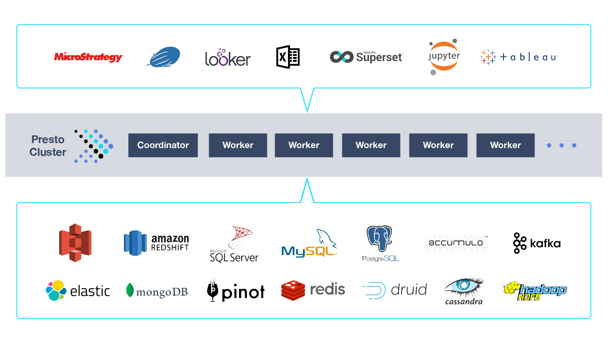

Introduction to Presto
Presto is a distributed system that runs on a cluster of machines. It enables analytics on large amounts of data. With Presto, access and query data in place on many data different data sources using ANSI SQL (see image below).
A full deployment includes a coordinator and multiple workers. Queries are submitted from a client such as the Presto CLI to the coordinator. The coordinator parses, analyzes and plans the query execution, then distributes the processing to the workers.

Presto supports pluggable connectors that provide data for queries. The requirements vary by connector. Connector examples include: Hive for HDFS or Object Stores (S3), MySQL, ElasticSearch, Cassandra, Kafka and more. In addition for benchmarking you can use the TPC-H or TPC-DS connectors. For a list of supported connectors see the docs.
Use Cases
Interactive analytics
Quickly analyze data and execute queries in seconds or minutes using
visualizations, dashboards, notebooks, and BI tools.
Batch ETL
Populate and process data in the warehouse for better throughput and efficiency.
A/B testing
Choose which data to slice and dice and evaluate product changes via hypothesis
testing, with results in hours (not days).
App Analytics
Build external-facing custom reporting tools with low latency and hundreds of
highly available concurrent queries.
Deployment
See Deploying Presto for complete deployment instructions.
Running Queries
You can run queries using the Command Line Interface after deploying Presto.